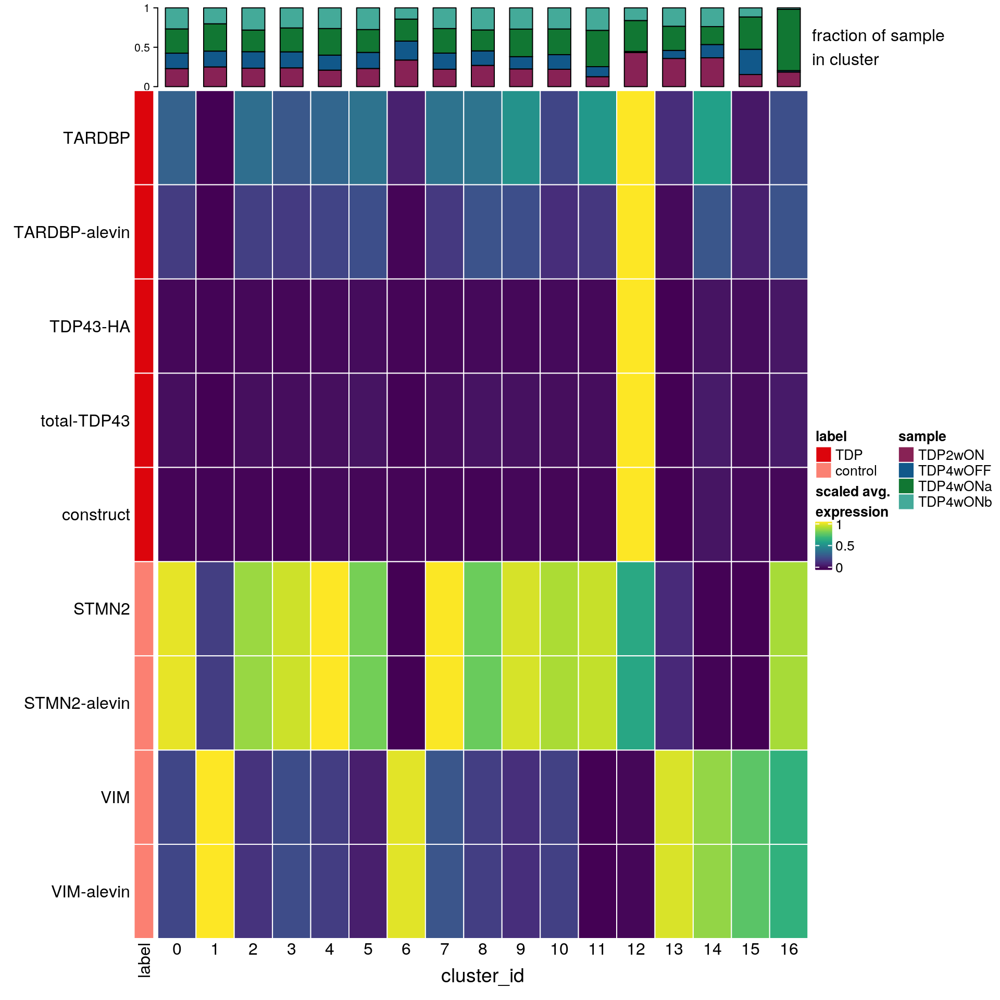

Total TDP and construct quantification
Katharina Hembach
22.07.2021
Last updated: 2021-07-26
Checks: 7 0
Knit directory: neural_scRNAseq/
This reproducible R Markdown analysis was created with workflowr (version 1.6.2). The Checks tab describes the reproducibility checks that were applied when the results were created. The Past versions tab lists the development history.
Great! Since the R Markdown file has been committed to the Git repository, you know the exact version of the code that produced these results.
Great job! The global environment was empty. Objects defined in the global environment can affect the analysis in your R Markdown file in unknown ways. For reproduciblity it's best to always run the code in an empty environment.
The command set.seed(20200522) was run prior to running the code in the R Markdown file. Setting a seed ensures that any results that rely on randomness, e.g. subsampling or permutations, are reproducible.
Great job! Recording the operating system, R version, and package versions is critical for reproducibility.
Nice! There were no cached chunks for this analysis, so you can be confident that you successfully produced the results during this run.
Great job! Using relative paths to the files within your workflowr project makes it easier to run your code on other machines.
Great! You are using Git for version control. Tracking code development and connecting the code version to the results is critical for reproducibility.
The results in this page were generated with repository version 0419bfb. See the Past versions tab to see a history of the changes made to the R Markdown and HTML files.
Note that you need to be careful to ensure that all relevant files for the analysis have been committed to Git prior to generating the results (you can use wflow_publish or wflow_git_commit). workflowr only checks the R Markdown file, but you know if there are other scripts or data files that it depends on. Below is the status of the Git repository when the results were generated:
Ignored files:
Ignored: .DS_Store
Ignored: .Rhistory
Ignored: .Rproj.user/
Ignored: ._.DS_Store
Ignored: ._Filtered.pdf
Ignored: ._Rplots.pdf
Ignored: ._Unfiltered.pdf
Ignored: .__workflowr.yml
Ignored: ._coverage.pdf
Ignored: ._coverage_sashimi.pdf
Ignored: ._coverage_sashimi.png
Ignored: ._iCLIP_nrXLs_markers.pdf
Ignored: ._neural_scRNAseq.Rproj
Ignored: ._pbDS_cell_level.pdf
Ignored: ._pbDS_top_expr_umap.pdf
Ignored: ._pbDS_upset.pdf
Ignored: ._sashimi.pdf
Ignored: ._stmn2.pdf
Ignored: ._tdp.pdf
Ignored: analysis/.DS_Store
Ignored: analysis/.Rhistory
Ignored: analysis/._.DS_Store
Ignored: analysis/._01-preprocessing.Rmd
Ignored: analysis/._01-preprocessing.html
Ignored: analysis/._02.1-SampleQC.Rmd
Ignored: analysis/._03-filtering.Rmd
Ignored: analysis/._04-clustering.Rmd
Ignored: analysis/._04-clustering.knit.md
Ignored: analysis/._04.1-cell_cycle.Rmd
Ignored: analysis/._05-annotation.Rmd
Ignored: analysis/._07-cluster-analysis-all-timepoints.Rmd
Ignored: analysis/._Lam-0-NSC_no_integration.Rmd
Ignored: analysis/._Lam-01-NSC_integration.Rmd
Ignored: analysis/._Lam-02-NSC_annotation.Rmd
Ignored: analysis/._NSC-1-clustering.Rmd
Ignored: analysis/._NSC-2-annotation.Rmd
Ignored: analysis/._TDP-06-cluster_analysis.Rmd
Ignored: analysis/.__site.yml
Ignored: analysis/._additional_filtering.Rmd
Ignored: analysis/._additional_filtering_clustering.Rmd
Ignored: analysis/._index.Rmd
Ignored: analysis/._organoid-01-1-qualtiy-control.Rmd
Ignored: analysis/._organoid-01-clustering.Rmd
Ignored: analysis/._organoid-02-integration.Rmd
Ignored: analysis/._organoid-03-cluster_analysis.Rmd
Ignored: analysis/._organoid-04-group_integration.Rmd
Ignored: analysis/._organoid-04-stage_integration.Rmd
Ignored: analysis/._organoid-05-group_integration_cluster_analysis.Rmd
Ignored: analysis/._organoid-05-stage_integration_cluster_analysis.Rmd
Ignored: analysis/._organoid-06-1-prepare-sce.Rmd
Ignored: analysis/._organoid-06-conos-analysis-Seurat.Rmd
Ignored: analysis/._organoid-06-conos-analysis-function.Rmd
Ignored: analysis/._organoid-06-conos-analysis.Rmd
Ignored: analysis/._organoid-06-group-integration-conos-analysis.Rmd
Ignored: analysis/._organoid-07-conos-visualization.Rmd
Ignored: analysis/._organoid-07-group-integration-conos-visualization.Rmd
Ignored: analysis/._organoid-08-conos-comparison.Rmd
Ignored: analysis/._organoid-0x-sample_integration.Rmd
Ignored: analysis/01-preprocessing_cache/
Ignored: analysis/02-1-SampleQC_cache/
Ignored: analysis/02-quality_control_cache/
Ignored: analysis/02.1-SampleQC_cache/
Ignored: analysis/03-filtering_cache/
Ignored: analysis/04-clustering_cache/
Ignored: analysis/04.1-cell_cycle_cache/
Ignored: analysis/05-annotation_cache/
Ignored: analysis/06-clustering-all-timepoints_cache/
Ignored: analysis/07-cluster-analysis-all-timepoints_cache/
Ignored: analysis/CH-test-01-preprocessing_cache/
Ignored: analysis/CH-test-02-transgene-expression_cache/
Ignored: analysis/CH-test-03-cluster-analysis_cache/
Ignored: analysis/Lam-01-NSC_integration_cache/
Ignored: analysis/Lam-02-NSC_annotation_cache/
Ignored: analysis/NSC-1-clustering_cache/
Ignored: analysis/NSC-2-annotation_cache/
Ignored: analysis/TDP-01-preprocessing_cache/
Ignored: analysis/TDP-02-quality_control_cache/
Ignored: analysis/TDP-03-filtering_cache/
Ignored: analysis/TDP-04-clustering_cache/
Ignored: analysis/TDP-05-00-filtering-plasmid-QC_cache/
Ignored: analysis/TDP-05-plasmid_expression_cache/
Ignored: analysis/TDP-06-cluster_analysis_cache/
Ignored: analysis/TDP-07-01-STMN2_expression_cache/
Ignored: analysis/TDP-07-02-Prudencio_marker_expression_cache/
Ignored: analysis/TDP-07-03-Liu_sorted_nuclei_marker_expression_cache/
Ignored: analysis/TDP-07-04-Tollervey_marker_binding_cache/
Ignored: analysis/TDP-07-cluster_12_cache/
Ignored: analysis/TDP-08-00-clustering-HA-D96_cache/
Ignored: analysis/TDP-08-01-HA-D96-expression-changes_cache/
Ignored: analysis/TDP-08-02-TDP_target_genes_cache/
Ignored: analysis/TDP-08-clustering-timeline-HA_cache/
Ignored: analysis/additional_filtering_cache/
Ignored: analysis/additional_filtering_clustering_cache/
Ignored: analysis/figure/
Ignored: analysis/organoid-01-1-qualtiy-control_cache/
Ignored: analysis/organoid-01-clustering_cache/
Ignored: analysis/organoid-02-integration_cache/
Ignored: analysis/organoid-03-cluster_analysis_cache/
Ignored: analysis/organoid-04-group_integration_cache/
Ignored: analysis/organoid-04-stage_integration_cache/
Ignored: analysis/organoid-05-group_integration_cluster_analysis_cache/
Ignored: analysis/organoid-05-stage_integration_cluster_analysis_cache/
Ignored: analysis/organoid-06-conos-analysis_cache/
Ignored: analysis/organoid-06-conos-analysis_test_cache/
Ignored: analysis/organoid-06-group-integration-conos-analysis_cache/
Ignored: analysis/organoid-07-conos-visualization_cache/
Ignored: analysis/organoid-07-group-integration-conos-visualization_cache/
Ignored: analysis/organoid-08-conos-comparison_cache/
Ignored: analysis/organoid-0x-sample_integration_cache/
Ignored: analysis/sample5_QC_cache/
Ignored: analysis/timepoints-01-organoid-integration_cache/
Ignored: analysis/timepoints-02-cluster-analysis_cache/
Ignored: data/.DS_Store
Ignored: data/._.DS_Store
Ignored: data/._.smbdeleteAAA17ed8b4b
Ignored: data/._Lam_figure2_markers.R
Ignored: data/._README.md
Ignored: data/._Reactive_astrocytes_markers.xlsx
Ignored: data/._known_NSC_markers.R
Ignored: data/._known_cell_type_markers.R
Ignored: data/._metadata.csv
Ignored: data/._virus_cell_tropism_markers.R
Ignored: data/._~$Reactive_astrocytes_markers.xlsx
Ignored: data/data_sushi/
Ignored: data/filtered_feature_matrices/
Ignored: output/.DS_Store
Ignored: output/._.DS_Store
Ignored: output/._Liu_TDP_neg_vs_pos_edgeR_dge_results.txt
Ignored: output/._NSC_cluster2_marker_genes.txt
Ignored: output/._TDP-06-no_integration_cluster12_marker_genes.txt
Ignored: output/._TDP-06-no_integration_cluster13_marker_genes.txt
Ignored: output/._organoid_integration_cluster1_marker_genes.txt
Ignored: output/._tbl_TDP-08-01-muscat_cluster_0.txt
Ignored: output/._tbl_TDP-08-01-muscat_cluster_1.txt
Ignored: output/._tbl_TDP-08-01-muscat_cluster_10.txt
Ignored: output/._tbl_TDP-08-01-muscat_cluster_11.txt
Ignored: output/._tbl_TDP-08-01-muscat_cluster_12.txt
Ignored: output/._tbl_TDP-08-01-muscat_cluster_13.txt
Ignored: output/._tbl_TDP-08-01-muscat_cluster_14.txt
Ignored: output/._tbl_TDP-08-01-muscat_cluster_5.txt
Ignored: output/._tbl_TDP-08-01-muscat_cluster_7.txt
Ignored: output/._tbl_TDP-08-01-muscat_cluster_8.txt
Ignored: output/._tbl_TDP-08-01-muscat_cluster_all.xlsx
Ignored: output/._tbl_TDP-08-02-targets_hek_cluster_0.txt
Ignored: output/._tbl_TDP-08-02-targets_hek_cluster_1.txt
Ignored: output/._tbl_TDP-08-02-targets_hek_cluster_10.txt
Ignored: output/._tbl_TDP-08-02-targets_hek_cluster_11.txt
Ignored: output/._tbl_TDP-08-02-targets_hek_cluster_12.txt
Ignored: output/._tbl_TDP-08-02-targets_hek_cluster_13.txt
Ignored: output/._tbl_TDP-08-02-targets_hek_cluster_14.txt
Ignored: output/._tbl_TDP-08-02-targets_hek_cluster_5.txt
Ignored: output/._tbl_TDP-08-02-targets_hek_cluster_7.txt
Ignored: output/._tbl_TDP-08-02-targets_hek_cluster_8.txt
Ignored: output/._tbl_TDP-08-02-targets_hek_cluster_all.xlsx
Ignored: output/._~$tbl_TDP-08-02-targets_hek_cluster_all.xlsx
Ignored: output/CH-test-01-preprocessing.rds
Ignored: output/CH-test-01-preprocessing_singlets.rds
Ignored: output/CH-test-01-preprocessing_singlets_filtered.rds
Ignored: output/CH-test-01-preprocessing_so.rds
Ignored: output/CH-test-01-preprocessing_so_filtered.rds
Ignored: output/CH-test-03-cluster-analysis_so.rds
Ignored: output/CH-test-03_scran_markers.rds
Ignored: output/Lam-01-clustering.rds
Ignored: output/Liu_TDP_neg_vs_pos_edgeR_dge.rds
Ignored: output/Liu_TDP_neg_vs_pos_edgeR_dge_results.txt
Ignored: output/NSC_1_clustering.rds
Ignored: output/NSC_cluster1_marker_genes.txt
Ignored: output/NSC_cluster2_marker_genes.txt
Ignored: output/NSC_cluster3_marker_genes.txt
Ignored: output/NSC_cluster4_marker_genes.txt
Ignored: output/NSC_cluster5_marker_genes.txt
Ignored: output/NSC_cluster6_marker_genes.txt
Ignored: output/NSC_cluster7_marker_genes.txt
Ignored: output/TDP-06-no_integration_cluster0_marker_genes.txt
Ignored: output/TDP-06-no_integration_cluster10_marker_genes.txt
Ignored: output/TDP-06-no_integration_cluster11_marker_genes.txt
Ignored: output/TDP-06-no_integration_cluster12_marker_genes.txt
Ignored: output/TDP-06-no_integration_cluster13_marker_genes.txt
Ignored: output/TDP-06-no_integration_cluster14_marker_genes.txt
Ignored: output/TDP-06-no_integration_cluster15_marker_genes.txt
Ignored: output/TDP-06-no_integration_cluster16_marker_genes.txt
Ignored: output/TDP-06-no_integration_cluster17_marker_genes.txt
Ignored: output/TDP-06-no_integration_cluster1_marker_genes.txt
Ignored: output/TDP-06-no_integration_cluster2_marker_genes.txt
Ignored: output/TDP-06-no_integration_cluster3_marker_genes.txt
Ignored: output/TDP-06-no_integration_cluster4_marker_genes.txt
Ignored: output/TDP-06-no_integration_cluster5_marker_genes.txt
Ignored: output/TDP-06-no_integration_cluster6_marker_genes.txt
Ignored: output/TDP-06-no_integration_cluster7_marker_genes.txt
Ignored: output/TDP-06-no_integration_cluster8_marker_genes.txt
Ignored: output/TDP-06-no_integration_cluster9_marker_genes.txt
Ignored: output/TDP-06_scran_markers.rds
Ignored: output/additional_filtering.rds
Ignored: output/conos/
Ignored: output/conos_organoid-06-conos-analysis.rds
Ignored: output/conos_organoid-06-group-integration-conos-analysis.rds
Ignored: output/figures/
Ignored: output/organoid_integration_cluster10_marker_genes.txt
Ignored: output/organoid_integration_cluster11_marker_genes.txt
Ignored: output/organoid_integration_cluster12_marker_genes.txt
Ignored: output/organoid_integration_cluster13_marker_genes.txt
Ignored: output/organoid_integration_cluster14_marker_genes.txt
Ignored: output/organoid_integration_cluster15_marker_genes.txt
Ignored: output/organoid_integration_cluster16_marker_genes.txt
Ignored: output/organoid_integration_cluster17_marker_genes.txt
Ignored: output/organoid_integration_cluster1_marker_genes.txt
Ignored: output/organoid_integration_cluster2_marker_genes.txt
Ignored: output/organoid_integration_cluster3_marker_genes.txt
Ignored: output/organoid_integration_cluster4_marker_genes.txt
Ignored: output/organoid_integration_cluster5_marker_genes.txt
Ignored: output/organoid_integration_cluster6_marker_genes.txt
Ignored: output/organoid_integration_cluster7_marker_genes.txt
Ignored: output/organoid_integration_cluster8_marker_genes.txt
Ignored: output/organoid_integration_cluster9_marker_genes.txt
Ignored: output/paper_supplement/
Ignored: output/res_TDP-08-01-muscat.rds
Ignored: output/sce_01_preprocessing.rds
Ignored: output/sce_02_quality_control.rds
Ignored: output/sce_03_filtering.rds
Ignored: output/sce_03_filtering_all_genes.rds
Ignored: output/sce_06-1-prepare-sce.rds
Ignored: output/sce_TDP-06-01-totalTDP-construct-quantification.rds
Ignored: output/sce_TDP-08-01-muscat.rds
Ignored: output/sce_TDP_01_preprocessing.rds
Ignored: output/sce_TDP_02_quality_control.rds
Ignored: output/sce_TDP_03_filtering.rds
Ignored: output/sce_TDP_03_filtering_all_genes.rds
Ignored: output/sce_organoid-01-clustering.rds
Ignored: output/sce_preprocessing.rds
Ignored: output/so_04-stage_integration.rds
Ignored: output/so_04_1_cell_cycle.rds
Ignored: output/so_04_clustering.rds
Ignored: output/so_06-clustering_all_timepoints.rds
Ignored: output/so_08-00_clustering_HA_D96.rds
Ignored: output/so_08-clustering_timeline_HA.rds
Ignored: output/so_0x-sample_integration.rds
Ignored: output/so_CH-test-02-transgene_expression.rds
Ignored: output/so_TDP-06-01-totalTDP-construct-quantification.rds
Ignored: output/so_TDP-06-cluster-analysis.rds
Ignored: output/so_TDP_04_clustering.rds
Ignored: output/so_TDP_05_plasmid_expression.rds
Ignored: output/so_additional_filtering_clustering.rds
Ignored: output/so_integrated_organoid-02-integration.rds
Ignored: output/so_merged_organoid-02-integration.rds
Ignored: output/so_organoid-01-clustering.rds
Ignored: output/so_sample_organoid-01-clustering.rds
Ignored: output/so_timepoints-01-organoid_integration.rds
Ignored: output/tbl_TDP-08-01-muscat.rds
Ignored: output/tbl_TDP-08-01-muscat_cluster_0.txt
Ignored: output/tbl_TDP-08-01-muscat_cluster_1.txt
Ignored: output/tbl_TDP-08-01-muscat_cluster_10.txt
Ignored: output/tbl_TDP-08-01-muscat_cluster_11.txt
Ignored: output/tbl_TDP-08-01-muscat_cluster_12.txt
Ignored: output/tbl_TDP-08-01-muscat_cluster_13.txt
Ignored: output/tbl_TDP-08-01-muscat_cluster_14.txt
Ignored: output/tbl_TDP-08-01-muscat_cluster_5.txt
Ignored: output/tbl_TDP-08-01-muscat_cluster_7.txt
Ignored: output/tbl_TDP-08-01-muscat_cluster_8.txt
Ignored: output/tbl_TDP-08-01-muscat_cluster_all.xlsx
Ignored: output/tbl_TDP-08-02-targets_hek.rds
Ignored: output/tbl_TDP-08-02-targets_hek_cluster_0.txt
Ignored: output/tbl_TDP-08-02-targets_hek_cluster_1.txt
Ignored: output/tbl_TDP-08-02-targets_hek_cluster_10.txt
Ignored: output/tbl_TDP-08-02-targets_hek_cluster_11.txt
Ignored: output/tbl_TDP-08-02-targets_hek_cluster_12.txt
Ignored: output/tbl_TDP-08-02-targets_hek_cluster_13.txt
Ignored: output/tbl_TDP-08-02-targets_hek_cluster_14.txt
Ignored: output/tbl_TDP-08-02-targets_hek_cluster_5.txt
Ignored: output/tbl_TDP-08-02-targets_hek_cluster_7.txt
Ignored: output/tbl_TDP-08-02-targets_hek_cluster_8.txt
Ignored: output/tbl_TDP-08-02-targets_hek_cluster_all.xlsx
Ignored: output/~$tbl_TDP-08-02-targets_hek_cluster_all.xlsx
Ignored: scripts/.DS_Store
Ignored: scripts/._.DS_Store
Ignored: scripts/._bu_Rcode.R
Ignored: scripts/._plasmid_expression.sh
Ignored: scripts/._plasmid_expression_cell_hashing_test.sh
Ignored: scripts/._plasmid_expression_total_TDP.sh
Ignored: scripts/._prepare_salmon_transcripts.R
Ignored: scripts/._prepare_salmon_transcripts_cell_hashing_test.R
Untracked files:
Untracked: Filtered.pdf
Untracked: Rplots.pdf
Untracked: Unfiltered
Untracked: Unfiltered.pdf
Untracked: analysis/.TDP-06-01-totalTDP-construct-quantification.Rmd.swp
Untracked: analysis/Lam-0-NSC_no_integration.Rmd
Untracked: analysis/TDP-06-01-totalTDP-construct-quantification_bu.Rmd
Untracked: analysis/TDP-07-01-STMN2_expression copy.Rmd
Untracked: analysis/additional_filtering.Rmd
Untracked: analysis/additional_filtering_clustering.Rmd
Untracked: analysis/organoid-01-1-qualtiy-control.Rmd
Untracked: analysis/organoid-06-conos-analysis-Seurat.Rmd
Untracked: analysis/organoid-06-conos-analysis-function.Rmd
Untracked: analysis/organoid-07-conos-visualization.Rmd
Untracked: analysis/organoid-07-group-integration-conos-visualization.Rmd
Untracked: analysis/organoid-08-conos-comparison.Rmd
Untracked: analysis/organoid-0x-sample_integration.Rmd
Untracked: analysis/sample5_QC.Rmd
Untracked: coverage.pdf
Untracked: coverage_sashimi.pdf
Untracked: coverage_sashimi.png
Untracked: data/Homo_sapiens.GRCh38.98.sorted.gtf
Untracked: data/Jun2021/
Untracked: data/Kanton_et_al/
Untracked: data/Lam_et_al/
Untracked: data/Liu_et_al/
Untracked: data/Prudencio_et_al/
Untracked: data/Sep2020/
Untracked: data/cell_hashing_test/
Untracked: data/reference/
Untracked: data/virus_cell_tropism_markers.R
Untracked: data/~$Reactive_astrocytes_markers.xlsx
Untracked: iCLIP_nrXLs_markers.pdf
Untracked: pbDS_cell_level.pdf
Untracked: pbDS_heatmap.pdf
Untracked: pbDS_top_expr_umap.pdf
Untracked: pbDS_upset.pdf
Untracked: sashimi.pdf
Untracked: scripts/bu_Rcode.R
Untracked: scripts/bu_code.Rmd
Untracked: scripts/plasmid_expression_cell_hashing_test.sh
Untracked: scripts/plasmid_expression_total_TDP.sh
Untracked: scripts/prepare_salmon_transcripts_cell_hashing_test.R
Untracked: scripts/prepare_salmon_transcripts_total_TDP.R
Untracked: scripts/salmon-latest_linux_x86_64/
Untracked: stmn2.pdf
Untracked: tdp.pdf
Unstaged changes:
Modified: analysis/05-annotation.Rmd
Modified: analysis/TDP-04-clustering.Rmd
Modified: analysis/TDP-07-01-STMN2_expression.Rmd
Modified: analysis/TDP-07-cluster_12.Rmd
Modified: analysis/TDP-08-01-HA-D96-expression-changes.Rmd
Modified: analysis/_site.yml
Modified: analysis/organoid-02-integration.Rmd
Modified: analysis/organoid-04-group_integration.Rmd
Modified: analysis/organoid-06-conos-analysis.Rmd
Note that any generated files, e.g. HTML, png, CSS, etc., are not included in this status report because it is ok for generated content to have uncommitted changes.
These are the previous versions of the repository in which changes were made to the R Markdown (analysis/TDP-06-01-totalTDP-construct-quantification.Rmd) and HTML (docs/TDP-06-01-totalTDP-construct-quantification.html) files. If you've configured a remote Git repository (see ?wflow_git_remote), click on the hyperlinks in the table below to view the files as they were in that past version.
| File | Version | Author | Date | Message |
|---|---|---|---|---|
| Rmd | 0419bfb | khembach | 2021-07-26 | select cells with total-TDP43 count > 0 and add feature plots |
| html | 9e6d90c | khembach | 2021-07-23 | Build site. |
| Rmd | 5488546 | khembach | 2021-07-23 | adjust figure sizes |
| html | e723f61 | khembach | 2021-07-23 | Build site. |
| Rmd | bb748de | khembach | 2021-07-23 | compare total TDP quantification (alevin) with CellRanger counts and |
Load packages
library(tximport)
library(ComplexHeatmap)
library(cowplot)
library(ggplot2)
library(dplyr)
library(muscat)
library(purrr)
library(RColorBrewer)
library(viridis)
library(scran)
library(Seurat)
library(SingleCellExperiment)
library(stringr)Load data
so <- readRDS(file.path("output", "so_TDP-06-cluster-analysis.rds"))
so <- SetIdent(so, value = "RNA_snn_res.0.4")We combine the quantification of the total TDP, the construct, STMN2 and VIM with the CellRanger count matrix.
sample_ids <- c("TDP4wOFF", "TDP2wON", "TDP4wONa", "TDP4wONb")
samples <- c("no1_Neural_cuture_d_96_TDP-43-HA_4w_DOXoff",
"no2_Neural_cuture_d_96_TDP-43-HA_2w_DOXON",
"no3_Neural_cuture_d_96_TDP-43-HA_4w_DOXONa",
"no4_Neural_cuture_d_96_TDP-43-HA_4w_DOXONb")
txi <- matrix(NA, nrow = 4)
for (i in 1:4) {
fi <- file.path("data", "Sep2020", "alevin_total_TDP43", samples[i],
"alevin/quants_mat.gz")
# import alevin quants
a <- tximport(fi, type="alevin")$counts
## match the alevin and CellRanger cell IDs
colnames(a) <- paste0(colnames(a), "-1.", sample_ids[i])
txi <- cbind(txi, a)
}
txi <- txi[,colnames(txi) != ""]We add the alevin counts to the CellRanger matrix.
## add two new rows to counts matrix and replace the counts for matching
## barcodes with the alevin counts
alevin_counts <- matrix(0, nrow = 4, ncol = ncol(so))
colnames(alevin_counts) <- colnames(so)
rownames(alevin_counts) <- rownames(txi)
## match the barcodes
m <- match(colnames(txi), colnames(so))
for(i in rownames(txi)){
alevin_counts[i,m[!is.na(m)]] <- txi[i,which(!is.na(m))]
}
## add new assay with the alevin quantifications
so[["alevin"]] <- CreateAssayObject(counts = alevin_counts)
## we estimate a scaling factor for the alevin counts so they are ona similar scale than the CellRanger counts
(ratio <- (colSums(so) %>% median / colSums(so[["alevin"]]) %>% median))[1] 35.52155(sf <- ceiling(10000/ratio))[1] 282DefaultAssay(so) <- "alevin"
## normalization with the scale factor proprtional to the difference in counts between the two assays
so <- NormalizeData(so, verbose = FALSE, scale.factor = sf,
normalization.method = "LogNormalize")
DefaultAssay(so) <- "RNA"DR colored by marker expression
# downsample to 5000 cells
cs <- sample(colnames(so), 5e3)
sub <- subset(so, cells = cs)
## plot the expression of the endogenous TDP-43 and TDP-HA
tdp <- c("ENSG00000120948.TARDBP", "ENSG00000120948.TARDBP-alevin", "TDP43-HA")
names(tdp) <- c("TARDBP", "TARDBP-alevin", "TDP-HA")
cat("## TDP-43\n")TDP-43
ps <- lapply(seq_along(tdp), function(i) {
if (!tdp[i] %in% rownames(sub)) return(NULL)
FeaturePlot(sub, features = tdp[i], reduction = "umap", pt.size = 0.4,
slot = "data") +
theme(aspect.ratio = 1, legend.position = "none") +
ggtitle(names(tdp)[i]) + theme_void() + theme(aspect.ratio = 1)
})
# arrange plots in grid
ps <- ps[!vapply(ps, is.null, logical(1))]
p <- plot_grid(plotlist = ps, ncol = 4, label_size = 10)
print(p)
| Version | Author | Date |
|---|---|---|
| e723f61 | khembach | 2021-07-23 |
cat("\n\n")DefaultAssay(sub) <- "alevin"
## total TDP and control genes
tdp <- c("total-TDP43", "construct")
names(tdp) <- c("total-TDP43", "construct")
cat("## total TDP-43\n")total TDP-43
ps <- lapply(seq_along(tdp), function(i) {
if (!tdp[i] %in% rownames(sub)) return(NULL)
FeaturePlot(sub, features = tdp[i], reduction = "umap", pt.size = 0.4,
slot = "data") +
theme(aspect.ratio = 1, legend.position = "none") +
ggtitle(names(tdp)[i]) + theme_void() + theme(aspect.ratio = 1)
})
# arrange plots in grid
ps <- ps[!vapply(ps, is.null, logical(1))]
p <- plot_grid(plotlist = ps, ncol = 4, label_size = 10)
print(p)
| Version | Author | Date |
|---|---|---|
| e723f61 | khembach | 2021-07-23 |
cat("\n\n")## control genes STMN2 and VIM
g <- c("STMN2-alevin", "VIM-alevin")
names(g) <- c("STMN2-alevin", "VIM-alevin")
cat("## control genes alevin\n")control genes alevin
ps <- lapply(seq_along(g), function(i) {
if (!g[i] %in% rownames(sub)) return(NULL)
FeaturePlot(sub, features = g[i], reduction = "umap", pt.size = 0.4,
slot = "data") +
theme(aspect.ratio = 1, legend.position = "none") +
ggtitle(names(g)[i]) + theme_void() + theme(aspect.ratio = 1)
})
# arrange plots in grid
ps <- ps[!vapply(ps, is.null, logical(1))]
p <- plot_grid(plotlist = ps, ncol = 4, label_size = 10)
print(p)
| Version | Author | Date |
|---|---|---|
| e723f61 | khembach | 2021-07-23 |
cat("\n\n")DefaultAssay(sub) <- "RNA"
g <- c("ENSG00000104435.STMN2", "ENSG00000026025.VIM")
names(g) <- c("STMN2", "VIM")
cat("## control genes CellRanger\n")control genes CellRanger
ps <- lapply(seq_along(g), function(i) {
if (!g[i] %in% rownames(sub)) return(NULL)
FeaturePlot(sub, features = g[i], reduction = "umap", pt.size = 0.4,
slot = "data") +
theme(aspect.ratio = 1, legend.position = "none") +
ggtitle(names(g)[i]) + theme_void() + theme(aspect.ratio = 1)
})
# arrange plots in grid
ps <- ps[!vapply(ps, is.null, logical(1))]
p <- plot_grid(plotlist = ps, ncol = 4, label_size = 10)
print(p)
| Version | Author | Date |
|---|---|---|
| e723f61 | khembach | 2021-07-23 |
cat("\n\n")Heatmap with TDP, construct and control genes
## prepare sce object with all genes in one count matrix!
merged_counts <- rbind(so@assays$RNA@counts, so@assays$alevin@counts)
sce <- SingleCellExperiment(list(counts=merged_counts,
logcounts = rbind(so@assays$RNA@data,
so@assays$alevin@data)))
sce$cluster_id <- Idents(so)
sce$sample_id <- so$sample_idApart from the usual marker genes, we also want to analyse the expression of Casein Kinase 1 Epsilon (CSNK1E).
fs <- list(TDP = c("ENSG00000120948.TARDBP", "ENSG00000120948.TARDBP-alevin",
"TDP43-HA", "total-TDP43", "construct"),
control = c("ENSG00000104435.STMN2", "STMN2-alevin",
"ENSG00000026025.VIM", "VIM-alevin"))
fs <- lapply(fs, function(x) unlist(x[lengths(x) !=0]) )
gs <- gsub(".*\\.", "", unlist(fs))
ns <- vapply(fs, length, numeric(1))
ks <- rep.int(names(fs), ns)
labs <- lapply(fs, function(x) gsub(".*\\.", "",x))# split cells by cluster
cs_by_k <- split(colnames(sce), sce$cluster_id)
# compute cluster-marker means
ms_by_cluster <- lapply(fs, function(gs) vapply(cs_by_k, function(i)
Matrix::rowMeans(logcounts(sce)[gs, i, drop = FALSE]),
numeric(length(gs))))
# prep. for plotting & scale b/w 0 and 1
mat <- do.call("rbind", ms_by_cluster)
mat <- muscat:::.scale(mat)
rownames(mat) <- gs
cols <- muscat:::.cluster_colors[seq_along(fs)]
cols <- setNames(cols, names(fs))
row_anno <- rowAnnotation(
df = data.frame(label = factor(ks, levels = names(fs))),
col = list(label = cols), gp = gpar(col = "white"))
# percentage of cells from each of the samples per cluster
(n_cells <- table(sce$cluster_id, sce$sample_id))
TDP2wON TDP4wOFF TDP4wONa TDP4wONb
0 1188 1015 1599 1384
1 1168 938 1621 943
2 907 811 1066 1091
3 725 619 925 775
4 616 560 996 771
5 672 594 846 802
6 576 411 477 243
7 375 348 530 446
8 450 307 444 467
9 254 176 396 304
10 207 174 307 251
11 63 64 231 143
12 97 3 88 36
13 49 14 42 32
14 37 17 23 24
15 12 25 32 9
16 10 1 42 1sample_props <- prop.table(n_cells, margin = 1)
col_mat <- as.matrix(unclass(sample_props))
sample_cols <- c("#882255", "#11588A", "#117733", "#44AA99")
sample_cols <- setNames(sample_cols, colnames(col_mat))
col_anno <- HeatmapAnnotation(
perc_sample = anno_barplot(col_mat, gp = gpar(fill = sample_cols),
height = unit(2, "cm"),
border = FALSE),
annotation_label = "fraction of sample\nin cluster",
gap = unit(10, "points"))
col_lgd <- Legend(labels = names(sample_cols),
title = "sample",
legend_gp = gpar(fill = sample_cols))
hm <- Heatmap(mat,
name = "scaled avg.\nexpression",
col = viridis(10),
cluster_rows = FALSE,
cluster_columns = FALSE,
row_names_side = "left",
column_title = "cluster_id",
column_title_side = "bottom",
column_names_side = "bottom",
column_names_rot = 0,
column_names_centered = TRUE,
rect_gp = gpar(col = "white"),
left_annotation = row_anno,
top_annotation = col_anno)
draw(hm, annotation_legend_list = list(col_lgd))
Adding the new alevin quantifications to all other
We don't separate the new alevin quantifications but add them to the count matrix with the CellRanger quantifications.
## new seurat object with the merged counts
so_merged <- CreateSeuratObject(
counts = merged_counts,
meta.data = so[[]], ## so@meta.data
project = "TDP_experiment")Normalization
# split by sample
cells_by_sample <- split(colnames(so_merged), so_merged$sample_id)
so_merged <- lapply(cells_by_sample, function(i) subset(so_merged, cells = i))
## log normalize the data using a scaling factor of 10000
so_merged <- lapply(so_merged, NormalizeData, verbose = FALSE, scale.factor = 10000,
normalization.method = "LogNormalize")We merge the normalized and data of the six samples into a combined Seurat object and compute variable features.
## merge the individial Seurat objects and conserve the normalized and scaled data
so_merged <- merge(so_merged[[1]], y = so_merged[2:length(so_merged)], project = "TDP_experiment",
merge.data = TRUE)
## use previously computed dimension reduction
so_merged@reductions <- so@reductions
so_merged$RNA_snn_res.0.4 <- factor(so_merged$RNA_snn_res.0.4, levels = 0:16)
so_merged <- SetIdent(so_merged, value = "RNA_snn_res.0.4")DR colored by marker expression
# downsample to 5000 cells
cs <- sample(colnames(so_merged), 5e3)
sub <- subset(so_merged, cells = cs)
## plot the expression of the endogenous TDP-43, TDP-HA, total TDP and the construct
tdp <- c("ENSG00000120948.TARDBP", "ENSG00000120948.TARDBP-alevin", "TDP43-HA", "total-TDP43", "construct")
names(tdp) <- c("TARDBP-CellRanger", "TARDBP-alevin", "TDP-HA", "total-TDP43", "construct")
cat("## TDP-43\n")TDP-43
ps <- lapply(seq_along(tdp), function(i) {
if (!tdp[i] %in% rownames(sub)) return(NULL)
FeaturePlot(sub, features = tdp[i], reduction = "umap", pt.size = 0.4,
slot = "data") +
theme(aspect.ratio = 1, legend.position = "none") +
ggtitle(names(tdp)[i]) + theme_void() + theme(aspect.ratio = 1)
})
# arrange plots in grid
ps <- ps[!vapply(ps, is.null, logical(1))]
p <- plot_grid(plotlist = ps, ncol = 4, label_size = 10)
print(p)
| Version | Author | Date |
|---|---|---|
| e723f61 | khembach | 2021-07-23 |
cat("\n\n")## control genes STMN2 and VIM
g <- c("ENSG00000104435.STMN2", "STMN2-alevin", "ENSG00000026025.VIM", "VIM-alevin")
names(g) <- c("STMN2-CellRanger", "STMN2-alevin", "VIM-CellRanger", "VIM-alevin")
cat("## control genes alevin\n")control genes alevin
ps <- lapply(seq_along(g), function(i) {
if (!g[i] %in% rownames(sub)) return(NULL)
FeaturePlot(sub, features = g[i], reduction = "umap", pt.size = 0.4,
slot = "data") +
theme(aspect.ratio = 1, legend.position = "none") +
ggtitle(names(g)[i]) + theme_void() + theme(aspect.ratio = 1)
})
# arrange plots in grid
ps <- ps[!vapply(ps, is.null, logical(1))]
p <- plot_grid(plotlist = ps, ncol = 4, label_size = 10)
print(p)
| Version | Author | Date |
|---|---|---|
| e723f61 | khembach | 2021-07-23 |
cat("\n\n")Heatmap with TDP, construct and control genes
## prepare sce object with all genes in one count matrix!
sce_merged <- as.SingleCellExperiment(so_merged)
sce_merged$cluster_id <- Idents(so_merged)
sce_merged$sample_id <- so_merged$sample_id# split cells by cluster
cs_by_k <- split(colnames(sce_merged), sce_merged$cluster_id)
# compute cluster-marker means
ms_by_cluster <- lapply(fs, function(gs) vapply(cs_by_k, function(i)
Matrix::rowMeans(logcounts(sce_merged)[gs, i, drop = FALSE]),
numeric(length(gs))))
# prep. for plotting & scale b/w 0 and 1
mat <- do.call("rbind", ms_by_cluster)
mat <- muscat:::.scale(mat)
rownames(mat) <- gs
cols <- muscat:::.cluster_colors[seq_along(fs)]
cols <- setNames(cols, names(fs))
row_anno <- rowAnnotation(
df = data.frame(label = factor(ks, levels = names(fs))),
col = list(label = cols), gp = gpar(col = "white"))
# percentage of cells from each of the samples per cluster
(n_cells <- table(sce_merged$cluster_id, sce_merged$sample_id))
TDP2wON TDP4wOFF TDP4wONa TDP4wONb
0 1188 1015 1599 1384
1 1168 938 1621 943
2 907 811 1066 1091
3 725 619 925 775
4 616 560 996 771
5 672 594 846 802
6 576 411 477 243
7 375 348 530 446
8 450 307 444 467
9 254 176 396 304
10 207 174 307 251
11 63 64 231 143
12 97 3 88 36
13 49 14 42 32
14 37 17 23 24
15 12 25 32 9
16 10 1 42 1sample_props <- prop.table(n_cells, margin = 1)
col_mat <- as.matrix(unclass(sample_props))
sample_cols <- c("#882255", "#11588A", "#117733", "#44AA99")
sample_cols <- setNames(sample_cols, colnames(col_mat))
col_anno <- HeatmapAnnotation(
perc_sample = anno_barplot(col_mat, gp = gpar(fill = sample_cols),
height = unit(2, "cm"),
border = FALSE),
annotation_label = "fraction of sample\nin cluster",
gap = unit(10, "points"))
col_lgd <- Legend(labels = names(sample_cols),
title = "sample",
legend_gp = gpar(fill = sample_cols))
hm <- Heatmap(mat,
name = "scaled avg.\nexpression",
col = viridis(10),
cluster_rows = FALSE,
cluster_columns = FALSE,
row_names_side = "left",
column_title = "cluster_id",
column_title_side = "bottom",
column_names_side = "bottom",
column_names_rot = 0,
column_names_centered = TRUE,
rect_gp = gpar(col = "white"),
left_annotation = row_anno,
top_annotation = col_anno)
draw(hm, annotation_legend_list = list(col_lgd))
Dotplot
features <- c("ENSG00000120948.TARDBP", "ENSG00000120948.TARDBP-alevin", "TDP43-HA", "total-TDP43", "construct", "ENSG00000104435.STMN2", "STMN2-alevin", "ENSG00000026025.VIM", "VIM-alevin")
fs <- c("TARDBP-CR", "TARDBP-alevin", "TDP-HA", "total-TDP43", "construct", "STMN2-CR", "STMN2-alevin", "VIM-CR", "VIM-alevin")
DotPlot(so_merged, assay = "RNA", features = features,
scale = TRUE, scale.min = 0, scale.max = 100, dot.scale = 6) +
RotatedAxis() + scale_color_viridis() +
theme(axis.text.x = element_text(angle=45)) + ylab("cluster ID") +
scale_x_discrete(name = "gene", breaks = features, labels=fs)
## only the neuronal clusters
neuronal_clusters <- c(0, 2:5, 7:11, 12)
DotPlot(so_merged, assay = "RNA", features = features, idents = neuronal_clusters,
scale = TRUE, scale.min = 0, scale.max = 100, dot.scale = 6) +
RotatedAxis() + scale_color_viridis() +
theme(axis.text.x = element_text(angle=45)) + ylab("cluster ID") +
scale_x_discrete(name = "gene", breaks = features, labels=fs)
Check for logFC of specific genes
We first subset the data to the neuronal clusters.
sce_sub <- sce_merged[,sce_merged$cluster_id %in% neuronal_clusters]## markers for all other clusters
all_default <- findMarkers(sce_sub, groups = sce_sub$cluster_id,
pval.type="all", assay.type = "logcounts")
all_default[["12"]][1:10,]DataFrame with 10 rows and 19 columns
p.value FDR summary.logFC logFC.0
<numeric> <numeric> <numeric> <numeric>
ENSG00000197406.DIO3 2.75524e-101 3.85018e-97 -0.624488 -1.046298
ENSG00000068305.MEF2A 5.44383e-94 3.80360e-90 1.521393 1.565268
ENSG00000128564.VGF 1.56866e-87 7.30684e-84 -1.484374 -1.761042
ENSG00000106236.NPTX2 6.18709e-86 2.16146e-82 2.376912 2.560395
ENSG00000171951.SCG2 1.42377e-85 3.97914e-82 -1.524608 -1.983169
ENSG00000115756.HPCAL1 1.12325e-81 2.61605e-78 -0.471511 -0.593918
ENSG00000171724.VAT1L 1.56707e-81 3.12832e-78 -0.643706 -0.643706
TDP43-HA 3.53266e-78 6.17067e-75 1.730656 1.745791
ENSG00000101489.CELF4 7.97054e-74 1.23756e-70 -0.616960 -0.880427
ENSG00000182870.GALNT9 1.28336e-70 1.79337e-67 -0.319167 -0.343776
logFC.1 logFC.2 logFC.3 logFC.4 logFC.5
<numeric> <numeric> <numeric> <numeric> <numeric>
ENSG00000197406.DIO3 NA -0.795685 -1.027247 -1.281696 -0.624488
ENSG00000068305.MEF2A NA 1.521393 1.576078 1.590858 1.522749
ENSG00000128564.VGF NA -1.821214 -1.894950 -1.692037 -2.172945
ENSG00000106236.NPTX2 NA 2.828946 2.376912 2.582931 2.362946
ENSG00000171951.SCG2 NA -1.763626 -1.943555 -1.884667 -1.524608
ENSG00000115756.HPCAL1 NA -0.471511 -0.843613 -0.840582 -0.705012
ENSG00000171724.VAT1L NA -0.822377 -0.747327 -0.815967 -1.073827
TDP43-HA NA 1.744715 1.748357 1.740472 1.730656
ENSG00000101489.CELF4 NA -0.791644 -0.811538 -0.828414 -0.616960
ENSG00000182870.GALNT9 NA -0.322449 -0.598481 -0.493152 -0.756738
logFC.6 logFC.7 logFC.8 logFC.9 logFC.10
<numeric> <numeric> <numeric> <numeric> <numeric>
ENSG00000197406.DIO3 NA -0.837965 -0.958831 -1.644596 -0.780593
ENSG00000068305.MEF2A NA 1.587535 1.530419 1.597972 1.590578
ENSG00000128564.VGF NA -1.970662 -1.682397 -1.863520 -2.157665
ENSG00000106236.NPTX2 NA 2.398881 2.459909 2.491559 2.603176
ENSG00000171951.SCG2 NA -2.390701 -1.500523 -1.801118 -2.027435
ENSG00000115756.HPCAL1 NA -0.819573 -1.015065 -1.136672 -1.156999
ENSG00000171724.VAT1L NA -0.755207 -0.754875 -0.907415 -1.162016
TDP43-HA NA 1.748184 1.739708 1.745546 1.737825
ENSG00000101489.CELF4 NA -0.808820 -0.793261 -0.679503 -0.817872
ENSG00000182870.GALNT9 NA -0.516095 -0.346855 -0.665268 -0.319167
logFC.11 logFC.13 logFC.14 logFC.15 logFC.16
<numeric> <numeric> <numeric> <numeric> <numeric>
ENSG00000197406.DIO3 -1.139397 NA NA NA NA
ENSG00000068305.MEF2A 1.604219 NA NA NA NA
ENSG00000128564.VGF -1.484374 NA NA NA NA
ENSG00000106236.NPTX2 2.747775 NA NA NA NA
ENSG00000171951.SCG2 -1.473938 NA NA NA NA
ENSG00000115756.HPCAL1 -1.046186 NA NA NA NA
ENSG00000171724.VAT1L -0.885315 NA NA NA NA
TDP43-HA 1.745746 NA NA NA NA
ENSG00000101489.CELF4 -0.727986 NA NA NA NA
ENSG00000182870.GALNT9 -0.376287 NA NA NA NA## what is the logFC for the different TDP quantifications and our control genes?
all_default[["12"]][which(rownames(all_default[["12"]]) %in% features),]DataFrame with 9 rows and 19 columns
p.value FDR summary.logFC logFC.0
<numeric> <numeric> <numeric> <numeric>
TDP43-HA 3.53266e-78 6.17067e-75 1.7306559 1.745791
total-TDP43 1.36284e-66 1.36031e-63 1.2744292 1.290974
construct 4.75406e-56 2.88840e-53 1.1417415 1.151854
STMN2-alevin 1.06158e-19 4.42822e-18 -0.6810534 -1.441526
ENSG00000104435.STMN2 2.33622e-19 9.46270e-18 -0.6856534 -1.443431
ENSG00000120948.TARDBP-alevin 2.91357e-04 1.66930e-03 0.1172288 0.128119
ENSG00000120948.TARDBP 8.28654e-03 3.25362e-02 0.0838790 0.117271
ENSG00000026025.VIM 2.73719e-01 5.93660e-01 0.0588915 -0.694411
VIM-alevin 3.52266e-01 7.15251e-01 0.0487390 -0.696555
logFC.1 logFC.2 logFC.3 logFC.4 logFC.5
<numeric> <numeric> <numeric> <numeric> <numeric>
TDP43-HA NA 1.744715 1.748357 1.740472 1.730656
total-TDP43 NA 1.289610 1.295004 1.288532 1.274429
construct NA 1.150644 1.152148 1.141741 1.145988
STMN2-alevin NA -0.966936 -1.287724 -1.580928 -0.745939
ENSG00000104435.STMN2 NA -0.974152 -1.288942 -1.586145 -0.752298
ENSG00000120948.TARDBP-alevin NA 0.126616 0.128775 0.124126 0.119556
ENSG00000120948.TARDBP NA 0.109713 0.123201 0.114812 0.106891
ENSG00000026025.VIM NA -0.468243 -0.768256 -0.584931 -0.228360
VIM-alevin NA -0.472772 -0.769696 -0.583138 -0.237050
logFC.6 logFC.7 logFC.8 logFC.9
<numeric> <numeric> <numeric> <numeric>
TDP43-HA NA 1.748184 1.739708 1.7455461
total-TDP43 NA 1.294260 1.276126 1.2844357
construct NA 1.150276 1.152853 1.1453648
STMN2-alevin NA -1.560722 -0.681053 -1.3457264
ENSG00000104435.STMN2 NA -1.570907 -0.685653 -1.3439320
ENSG00000120948.TARDBP-alevin NA 0.129281 0.117229 0.1194269
ENSG00000120948.TARDBP NA 0.106486 0.106091 0.0873809
ENSG00000026025.VIM NA -0.896212 -0.593201 -0.4216214
VIM-alevin NA -0.884929 -0.597517 -0.4206806
logFC.10 logFC.11 logFC.13 logFC.14
<numeric> <numeric> <numeric> <numeric>
TDP43-HA 1.737825 1.7457458 NA NA
total-TDP43 1.291781 1.2949158 NA NA
construct 1.149105 1.1471428 NA NA
STMN2-alevin -1.084390 -1.2281809 NA NA
ENSG00000104435.STMN2 -1.086801 -1.2522374 NA NA
ENSG00000120948.TARDBP-alevin 0.134381 0.1302804 NA NA
ENSG00000120948.TARDBP 0.133261 0.0838790 NA NA
ENSG00000026025.VIM -0.622098 0.0588915 NA NA
VIM-alevin -0.627804 0.0487390 NA NA
logFC.15 logFC.16
<numeric> <numeric>
TDP43-HA NA NA
total-TDP43 NA NA
construct NA NA
STMN2-alevin NA NA
ENSG00000104435.STMN2 NA NA
ENSG00000120948.TARDBP-alevin NA NA
ENSG00000120948.TARDBP NA NA
ENSG00000026025.VIM NA NA
VIM-alevin NA NA## compute the mean logFC, because the reported summary logFC is the smallest logFC to any cluster
rowMeans(all_default[["12"]][which(rownames(all_default[["12"]]) %in% features),] %>%
as.data.frame %>% dplyr::select(starts_with("logFC")), na.rm = TRUE) TDP43-HA total-TDP43
1.7426999 1.2880069
construct STMN2-alevin
1.1487117 -1.1923126
ENSG00000104435.STMN2 ENSG00000120948.TARDBP-alevin
-1.1984499 0.1257790
ENSG00000120948.TARDBP ENSG00000026025.VIM
0.1088986 -0.5218441
VIM-alevin
-0.5241402 neuronal_clusters1 <- neuronal_clusters[neuronal_clusters != "12"]
## using Seurat
FoldChange(object = so_merged, slot = "data", ident.1 = 12,
ident.2 = neuronal_clusters1,
features = features, pseudocount.use = 1) avg_log2FC pct.1 pct.2
ENSG00000120948.TARDBP 0.2752933 0.415 0.412
ENSG00000120948.TARDBP-alevin 0.3698014 0.335 0.286
TDP43-HA 3.0330579 0.938 0.178
total-TDP43 2.2254752 0.911 0.295
construct 2.1441423 0.844 0.026
ENSG00000104435.STMN2 -1.3871739 0.942 1.000
STMN2-alevin -1.3908633 0.938 1.000
ENSG00000026025.VIM -0.8103212 0.929 0.980
VIM-alevin -0.8240223 0.920 0.979# the default pseudocount is 1, but that gives much higher logFC than scran findMarkers
# a value of 3 gives similar results...
FoldChange(object = so_merged, slot = "data", ident.1 = 12,
ident.2 = neuronal_clusters1,
features = features, pseudocount.use = 3) avg_log2FC pct.1 pct.2
ENSG00000120948.TARDBP 0.1134088 0.415 0.412
ENSG00000120948.TARDBP-alevin 0.1447382 0.335 0.286
TDP43-HA 1.8138183 0.938 0.178
total-TDP43 1.2455788 0.911 0.295
construct 1.1065239 0.844 0.026
ENSG00000104435.STMN2 -1.3016237 0.942 1.000
STMN2-alevin -1.2957810 0.938 1.000
ENSG00000026025.VIM -0.6226167 0.929 0.980
VIM-alevin -0.6262727 0.920 0.979# a small pseudocount doesn't not affect genes with low expression that much
FoldChange(object = so_merged, slot = "data", ident.1 = 12,
ident.2 = neuronal_clusters1,
features = features, pseudocount.use = 0.001) avg_log2FC pct.1 pct.2
ENSG00000120948.TARDBP 0.9825999 0.415 0.412
ENSG00000120948.TARDBP-alevin 1.8100665 0.335 0.286
TDP43-HA 6.6391454 0.938 0.178
total-TDP43 4.5827505 0.911 0.295
construct 7.5692157 0.844 0.026
ENSG00000104435.STMN2 -1.4346164 0.942 1.000
STMN2-alevin -1.4442310 0.938 1.000
ENSG00000026025.VIM -0.9558110 0.929 0.980
VIM-alevin -0.9804704 0.920 0.979logFC of TDP-43 expressing cells
We compute the total TDP-43 logFC between cluster 12 and all neuronal clusters using the cells with expression > 0.
so_merge_sub <- subset(x = so_merged, subset = `total-TDP43` > 0, slot = "counts",
idents = neuronal_clusters)
## mean log2FC over all neuronal clusters
FoldChange(object = so_merge_sub, slot = "data", ident.1 = 12,
ident.2 = neuronal_clusters1,
features = features, pseudocount.use = 0.001) avg_log2FC pct.1 pct.2
ENSG00000120948.TARDBP 0.2694650 0.446 0.695
ENSG00000120948.TARDBP-alevin 0.1926280 0.368 0.968
TDP43-HA 5.1524308 0.990 0.558
total-TDP43 2.9631770 1.000 1.000
construct 6.6715474 0.887 0.046
ENSG00000104435.STMN2 -1.4407947 0.951 1.000
STMN2-alevin -1.4457037 0.941 1.000
ENSG00000026025.VIM -0.9492385 0.936 0.985
VIM-alevin -0.9660023 0.931 0.984# logFC for each cluster individually
res_per_cluster <- lapply(neuronal_clusters1, function(x) {
FoldChange(object = so_merge_sub, slot = "data", ident.1 = 12,
ident.2 = x,
features = features, pseudocount.use = 0.001)
})
names(res_per_cluster) <- neuronal_clusters1
res_per_cluster$`0`
avg_log2FC pct.1 pct.2
ENSG00000120948.TARDBP 0.18895629 0.446 0.688
ENSG00000120948.TARDBP-alevin 0.07857973 0.368 0.978
TDP43-HA 4.91736705 0.990 0.567
total-TDP43 2.80867991 1.000 1.000
construct 6.46790055 0.887 0.030
ENSG00000104435.STMN2 -1.65110924 0.951 1.000
STMN2-alevin -1.65965375 0.941 1.000
ENSG00000026025.VIM -1.14474838 0.936 0.983
VIM-alevin -1.16476202 0.931 0.981
$`2`
avg_log2FC pct.1 pct.2
ENSG00000120948.TARDBP 0.14270135 0.446 0.686
ENSG00000120948.TARDBP-alevin 0.06419426 0.368 0.969
TDP43-HA 5.08966165 0.990 0.556
total-TDP43 2.85087536 1.000 1.000
construct 6.65708914 0.887 0.041
ENSG00000104435.STMN2 -0.99665280 0.951 1.000
STMN2-alevin -0.99923351 0.941 1.000
ENSG00000026025.VIM -0.83613952 0.936 0.991
VIM-alevin -0.86080516 0.931 0.989
$`3`
avg_log2FC pct.1 pct.2
ENSG00000120948.TARDBP 0.16820761 0.446 0.654
ENSG00000120948.TARDBP-alevin 0.02705666 0.368 0.970
TDP43-HA 5.27865242 0.990 0.555
total-TDP43 2.85976517 1.000 1.000
construct 7.33023052 0.887 0.038
ENSG00000104435.STMN2 -1.49092338 0.951 1.000
STMN2-alevin -1.50312479 0.941 1.000
ENSG00000026025.VIM -1.19022410 0.936 0.978
VIM-alevin -1.20554661 0.931 0.977
$`4`
avg_log2FC pct.1 pct.2
ENSG00000120948.TARDBP 0.5205529 0.446 0.738
ENSG00000120948.TARDBP-alevin 0.5712139 0.368 0.967
TDP43-HA 5.6110905 0.990 0.535
total-TDP43 3.3895587 1.000 1.000
construct 6.7301499 0.887 0.061
ENSG00000104435.STMN2 -1.8701496 0.951 1.000
STMN2-alevin -1.8756345 0.941 1.000
ENSG00000026025.VIM -0.8112479 0.936 0.999
VIM-alevin -0.8250981 0.931 0.999
$`5`
avg_log2FC pct.1 pct.2
ENSG00000120948.TARDBP 0.06978598 0.446 0.635
ENSG00000120948.TARDBP-alevin -0.14820830 0.368 0.959
TDP43-HA 4.56253758 0.990 0.594
total-TDP43 2.54475230 1.000 1.000
construct 6.02026525 0.887 0.054
ENSG00000104435.STMN2 -0.70209771 0.951 1.000
STMN2-alevin -0.69963070 0.941 1.000
ENSG00000026025.VIM -0.48110503 0.936 0.959
VIM-alevin -0.50647735 0.931 0.956
$`7`
avg_log2FC pct.1 pct.2
ENSG00000120948.TARDBP 0.4535827 0.446 0.715
ENSG00000120948.TARDBP-alevin 0.4689463 0.368 0.957
TDP43-HA 5.6258284 0.990 0.539
total-TDP43 3.2959716 1.000 1.000
construct 7.2107819 0.887 0.048
ENSG00000104435.STMN2 -1.8248918 0.951 1.000
STMN2-alevin -1.8228662 0.941 1.000
ENSG00000026025.VIM -1.3109036 0.936 0.998
VIM-alevin -1.3084975 0.931 0.996
$`8`
avg_log2FC pct.1 pct.2
ENSG00000120948.TARDBP 0.14483856 0.446 0.672
ENSG00000120948.TARDBP-alevin -0.03171034 0.368 0.981
TDP43-HA 4.95766299 0.990 0.572
total-TDP43 2.71864852 1.000 1.000
construct 7.14860106 0.887 0.024
ENSG00000104435.STMN2 -0.68255999 0.951 0.996
STMN2-alevin -0.67208701 0.941 0.996
ENSG00000026025.VIM -1.25674580 0.936 0.966
VIM-alevin -1.27230507 0.931 0.964
$`9`
avg_log2FC pct.1 pct.2
ENSG00000120948.TARDBP 0.4996492 0.446 0.779
ENSG00000120948.TARDBP-alevin 0.6714105 0.368 0.959
TDP43-HA 5.7199577 0.990 0.514
total-TDP43 3.5264805 1.000 1.000
construct 6.4798113 0.887 0.071
ENSG00000104435.STMN2 -1.5139336 0.951 1.000
STMN2-alevin -1.5301681 0.941 1.000
ENSG00000026025.VIM -0.5568563 0.936 1.000
VIM-alevin -0.5745956 0.931 0.998
$`10`
avg_log2FC pct.1 pct.2
ENSG00000120948.TARDBP 0.5734840 0.446 0.662
ENSG00000120948.TARDBP-alevin 0.4526797 0.368 0.952
TDP43-HA 5.1442100 0.990 0.604
total-TDP43 3.1343867 1.000 1.000
construct 6.8065050 0.887 0.055
ENSG00000104435.STMN2 -1.2536313 0.951 1.000
STMN2-alevin -1.2630024 0.941 1.000
ENSG00000026025.VIM -0.9339855 0.936 0.997
VIM-alevin -0.9560955 0.931 0.997
$`11`
avg_log2FC pct.1 pct.2
ENSG00000120948.TARDBP 0.4415897 0.446 0.789
ENSG00000120948.TARDBP-alevin 0.7155268 0.368 0.963
TDP43-HA 5.8346476 0.990 0.563
total-TDP43 3.5385782 1.000 1.000
construct 7.1546691 0.887 0.068
ENSG00000104435.STMN2 -1.3337359 0.951 1.000
STMN2-alevin -1.3102117 0.941 1.000
ENSG00000026025.VIM 0.3753479 0.936 0.979
VIM-alevin 0.3684862 0.931 0.979Gene expression per cluster
Some feature plots for the cells with total-TDP-43 countx > 0.
features1 <- features <- c("ENSG00000120948.TARDBP","TDP43-HA", "total-TDP43",
"construct", "ENSG00000104435.STMN2", "ENSG00000026025.VIM")
RidgePlot(so_merge_sub, features = features1, ncol = 3)VlnPlot(so_merge_sub, features = features1)FeaturePlot(so_merge_sub, features = features1, reduction = "umap", pt.size = 0.4)fs1 <- c("TARDBP-CR", "TDP-HA", "total-TDP43", "construct", "STMN2-CR", "VIM-CR")
DotPlot(so_merge_sub, assay = "RNA", features = features1, idents = neuronal_clusters,
scale = TRUE, scale.min = 0, scale.max = 100, dot.scale = 6) +
RotatedAxis() + scale_color_viridis() +
theme(axis.text.x = element_text(angle=45)) + ylab("cluster ID") +
scale_x_discrete(name = "gene", breaks = features1, labels=fs1)Save cluster markers to RDS
saveRDS(so_merged, file.path("output", "so_TDP-06-01-totalTDP-construct-quantification.rds"))
saveRDS(sce_merged, file.path("output", "sce_TDP-06-01-totalTDP-construct-quantification.rds"))
sessionInfo()R version 4.0.5 (2021-03-31)
Platform: x86_64-pc-linux-gnu (64-bit)
Running under: Ubuntu 18.04.5 LTS
Matrix products: default
BLAS: /usr/local/R/R-4.0.5/lib/libRblas.so
LAPACK: /usr/local/R/R-4.0.5/lib/libRlapack.so
locale:
[1] LC_CTYPE=en_US.UTF-8 LC_NUMERIC=C
[3] LC_TIME=en_US.UTF-8 LC_COLLATE=en_US.UTF-8
[5] LC_MONETARY=en_US.UTF-8 LC_MESSAGES=en_US.UTF-8
[7] LC_PAPER=en_US.UTF-8 LC_NAME=C
[9] LC_ADDRESS=C LC_TELEPHONE=C
[11] LC_MEASUREMENT=en_US.UTF-8 LC_IDENTIFICATION=C
attached base packages:
[1] parallel stats4 grid stats graphics grDevices utils
[8] datasets methods base
other attached packages:
[1] stringr_1.4.0 SeuratObject_4.0.1
[3] Seurat_4.0.1 scran_1.16.0
[5] SingleCellExperiment_1.10.1 SummarizedExperiment_1.18.1
[7] DelayedArray_0.14.0 matrixStats_0.56.0
[9] Biobase_2.48.0 GenomicRanges_1.40.0
[11] GenomeInfoDb_1.24.2 IRanges_2.22.2
[13] S4Vectors_0.26.1 BiocGenerics_0.34.0
[15] viridis_0.5.1 viridisLite_0.3.0
[17] RColorBrewer_1.1-2 purrr_0.3.4
[19] muscat_1.2.1 dplyr_1.0.2
[21] ggplot2_3.3.2 cowplot_1.0.0
[23] ComplexHeatmap_2.4.2 tximport_1.16.1
[25] workflowr_1.6.2
loaded via a namespace (and not attached):
[1] reticulate_1.16 tidyselect_1.1.0
[3] lme4_1.1-23 RSQLite_2.2.0
[5] AnnotationDbi_1.50.1 htmlwidgets_1.5.1
[7] BiocParallel_1.22.0 Rtsne_0.15
[9] munsell_0.5.0 codetools_0.2-16
[11] ica_1.0-2 statmod_1.4.34
[13] future_1.17.0 miniUI_0.1.1.1
[15] withr_2.4.1 colorspace_1.4-1
[17] knitr_1.29 ROCR_1.0-11
[19] tensor_1.5 listenv_0.8.0
[21] labeling_0.3 git2r_0.27.1
[23] GenomeInfoDbData_1.2.3 polyclip_1.10-0
[25] farver_2.0.3 bit64_0.9-7
[27] glmmTMB_1.0.2.1 rprojroot_1.3-2
[29] vctrs_0.3.4 generics_0.0.2
[31] xfun_0.15 R6_2.4.1
[33] doParallel_1.0.15 ggbeeswarm_0.6.0
[35] clue_0.3-57 rsvd_1.0.3
[37] locfit_1.5-9.4 spatstat.utils_2.1-0
[39] bitops_1.0-6 cachem_1.0.4
[41] promises_1.1.1 scales_1.1.1
[43] beeswarm_0.2.3 gtable_0.3.0
[45] globals_0.12.5 goftest_1.2-2
[47] rlang_0.4.10 genefilter_1.70.0
[49] GlobalOptions_0.1.2 splines_4.0.5
[51] lazyeval_0.2.2 TMB_1.7.16
[53] spatstat.geom_2.1-0 abind_1.4-5
[55] yaml_2.2.1 reshape2_1.4.4
[57] backports_1.1.9 httpuv_1.5.4
[59] tools_4.0.5 spatstat.core_2.1-2
[61] ellipsis_0.3.1 gplots_3.0.4
[63] ggridges_0.5.2 Rcpp_1.0.5
[65] plyr_1.8.6 progress_1.2.2
[67] zlibbioc_1.34.0 RCurl_1.98-1.3
[69] prettyunits_1.1.1 rpart_4.1-15
[71] deldir_0.2-10 pbapply_1.4-2
[73] GetoptLong_1.0.1 zoo_1.8-8
[75] ggrepel_0.8.2 cluster_2.1.0
[77] colorRamps_2.3 fs_1.5.0
[79] variancePartition_1.18.2 magrittr_1.5
[81] scattermore_0.7 data.table_1.12.8
[83] lmerTest_3.1-2 circlize_0.4.10
[85] lmtest_0.9-37 RANN_2.6.1
[87] whisker_0.4 fitdistrplus_1.1-1
[89] hms_0.5.3 patchwork_1.0.1
[91] mime_0.9 evaluate_0.14
[93] xtable_1.8-4 pbkrtest_0.4-8.6
[95] XML_3.99-0.4 gridExtra_2.3
[97] shape_1.4.4 compiler_4.0.5
[99] scater_1.16.2 tibble_3.0.3
[101] KernSmooth_2.23-17 crayon_1.3.4
[103] minqa_1.2.4 htmltools_0.5.0
[105] mgcv_1.8-31 later_1.1.0.1
[107] tidyr_1.1.0 geneplotter_1.66.0
[109] DBI_1.1.0 MASS_7.3-51.6
[111] rappdirs_0.3.1 boot_1.3-25
[113] Matrix_1.3-3 gdata_2.18.0
[115] igraph_1.2.5 pkgconfig_2.0.3
[117] numDeriv_2016.8-1.1 spatstat.sparse_2.0-0
[119] plotly_4.9.2.1 foreach_1.5.0
[121] annotate_1.66.0 vipor_0.4.5
[123] dqrng_0.2.1 blme_1.0-4
[125] XVector_0.28.0 digest_0.6.25
[127] sctransform_0.3.2 RcppAnnoy_0.0.18
[129] spatstat.data_2.1-0 rmarkdown_2.3
[131] leiden_0.3.3 uwot_0.1.10
[133] edgeR_3.30.3 DelayedMatrixStats_1.10.1
[135] shiny_1.5.0 gtools_3.8.2
[137] rjson_0.2.20 nloptr_1.2.2.2
[139] lifecycle_1.0.0 nlme_3.1-148
[141] jsonlite_1.7.2 BiocNeighbors_1.6.0
[143] limma_3.44.3 pillar_1.4.6
[145] lattice_0.20-41 fastmap_1.0.1
[147] httr_1.4.2 survival_3.2-3
[149] glue_1.4.2 png_0.1-7
[151] iterators_1.0.12 bit_1.1-15.2
[153] stringi_1.4.6 blob_1.2.1
[155] DESeq2_1.28.1 BiocSingular_1.4.0
[157] caTools_1.18.0 memoise_2.0.0
[159] irlba_2.3.3 future.apply_1.6.0